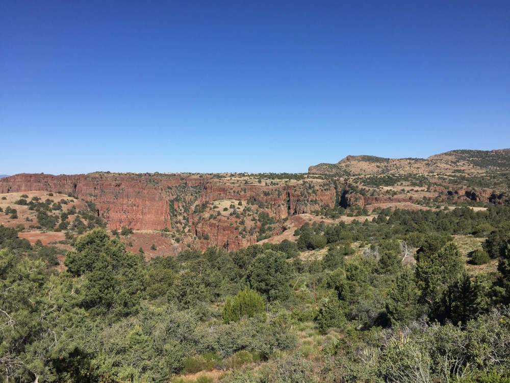

Arizona

Inhabited anciently by Pueblo, Mogollon, and Hohokam, and later Navajo, Apache, Hopi, and others, the first Europeans in Arizona were Spanish Conquistadors, who established missions and fortified towns. After the Mexican-American War, the land was purchased by the United States as part of the Gadsden Purchase. From 1850 until 1862, Arizona was a part of the New Mexico Territory, and in 1862, Confederate President Jefferson Davis established the Arizona Territory, leading to the westernmost battle of the civil war in the Battle of Picacho Pass (1862) and the Confederate expulsion from the territory. From 1863 to 1912, Arizona was a seperate territory from New Mexico, and would become the last state in the continental United States on February 14, 1912. During the late 19th century, Northern and Central Arizona was settled by Mormon Settlers under direction of Brigham Young. Their influence can still be felt in the culture and demographics of the state to this day. It is also important to note that Arizona is the last Wild West state, and during the silver boom in Southern Arizona, it saw many famous names, including Doc Holliday Wyatt Earp, and Geronimo, and even held the gunfight at the OK Corral, which is the most famous gunfight in the American West.